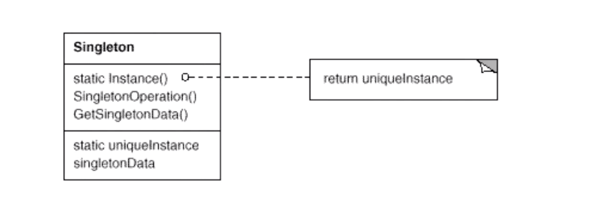
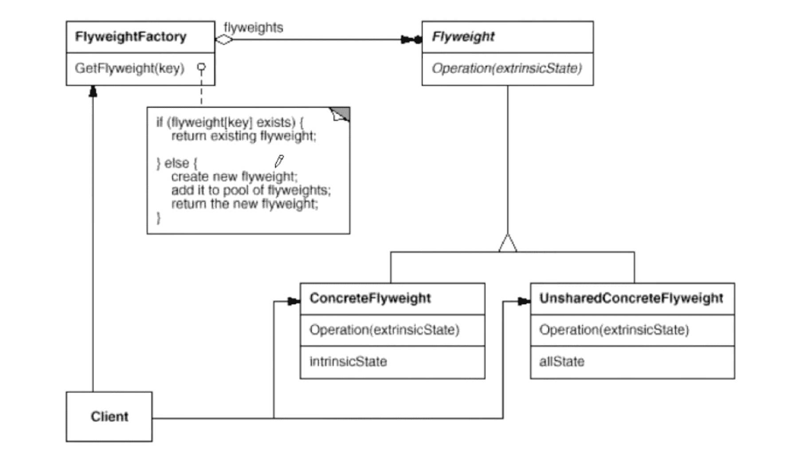

“对象性能类”设计模式（C++）
OOP 很好地解决了“抽象”的问题，但是必不可免地要付出一定的代价。对于通常情况来讲，面向对象的成本大都可以忽略不计。但是对于某些情况，其所带来的成本必须被谨慎处理。
单例模式（Singleton）
在软件系统中，经常有这样一些特殊的类，必须保证它们在系统中只存在一个实例，才能确保它们的逻辑正确性、以及良好的效率。如何绕过常规的构造器，提供一种机制来保证一个类只有一个实例？这应该是类设计者的责任，而不是使用者的责任。

模式定义：保证一个类仅有一个实例，并提供一个该实例的全局访问点。
非线程安全版实现：
class Singleton {
Singleton() = default;
Singleton(const Singleton&) = delete;
public:
static Singleton* getInstance();
static Singleton* instance;
};
Singleton* Singleton::instance = nullptr;
Singleton* Singleton::getInstance() { // 线程非安全；
if (instance == nullptr) {
instance = new Singleton();
}
return instance;
}
线程安全，但锁代价过高版实现：
class Singleton {
Singleton() = default;
Singleton(const Singleton&) = delete;
public:
static Singleton* getInstance();
static Singleton* instance;
};
Singleton* Singleton::instance = nullptr;
std::mutex singletonMutex;
Singleton* Singleton::getInstance() { // 线程安全，但锁代价太高；
std::lock_guard<std::mutex> lock(singletonMutex);
if (instance == nullptr) {
instance = new Singleton();
}
return instance;
}
双检查锁，防止 CPU 乱序导致锁失效版实现：
class Singleton {
Singleton() = default;
Singleton(const Singleton&) = delete;
public:
static Singleton* getInstance();
static std::atomic<Singleton*> instance;
};
std::atomic<Singleton*> Singleton::instance = nullptr;
std::mutex singletonMutex;
Singleton* Singleton::getInstance() { // 双检查锁；
Singleton* _t = instance.load(std::memory_order_relaxed);
std::atomic_thread_fence(std::memory_order_acquire); // 下述代码对应机器指令将按顺序执行；
if (_t == nullptr) {
std::lock_guard<std::mutex> lock(singletonMutex);
_t = instance.load(std::memory_order_relaxed);
if (_t == nullptr) {
_t = new Singleton();
std::atomic_thread_fence(std::memory_order_release);
instance.store(_t, std::memory_order_relaxed); // 一次性赋值；
}
}
return _t;
}
总结：
- 单例模式中的实例构造器可以设置为 protected 以允许子类派生；
- 单例模式一般不要支持拷贝构造函数和 Clone 接口，因为这有可能导致多个对象实例，与该模式初衷违背；
- 如何实现多线程环境下的安全单例模式？注意对“双检查锁”的正确实现；
享元模式（Flyweight）
在软件系统中采用纯粹对象方案的问题在于大量细粒度的对象会很快充斥在系统中，从而带来很高的运行时代价 —— 主要指内存需求方面的代价。如何在避免大量细粒度对象问题的同时，让外部客户程序仍然能够透明地使用面向对象的方式来进行操作？

模式定义：运用共享技术有效地支持大量细粒度的对象。
class Entity {
std::string key;
public:
Entity(std::string key) : key(key) {}
};
class EntityPool {
std::unordered_map<std::string, std::shared_ptr<Entity>> entityPool; // 共享池；
public:
std::shared_ptr<Entity> getEntity(std::string key) {
auto iter = entityPool.find(key);
if (iter != entityPool.end()) {
return entityPool[key];
} else {
auto _t = std::make_shared<Entity>(key);
entityPool[key] = _t;
return _t;
}
}
};
int main(int argc, char** argv) {
EntityPool entityPool{};
auto entity = entityPool.getEntity("Hello, world!");
return 0;
}
总结：
- 面向对象很好地解决了抽象性问题，但是作为一个运行在机器中的程序实体，我们需要考虑对象的代价问题。Flyweight 主要解决面向对象的代价问题，一般不触及面向对象的抽象性问题；
- 该模式采用对象共享的做法来降低系统中对象的个数，从而降低细粒度对象给系统带来的内存压力。在具体实现方面，要注意对象状态的处理；
- 对象的数量太大而导致对象内存开销加大 —— 什么样的数量才算大？这需要我们仔细根据具体应用情况进行评估，而不能凭空臆断；
评论 | Comments